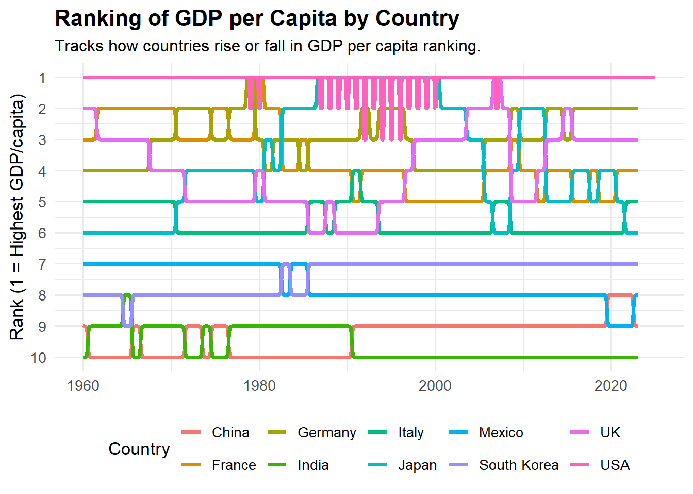
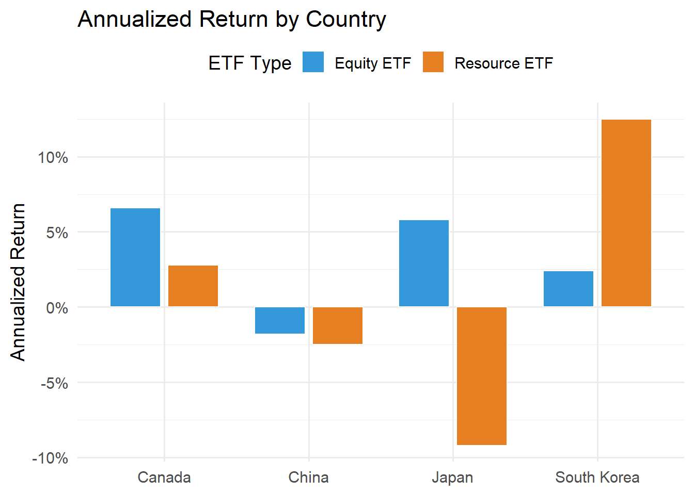

Note: Due to persistent API connection issues with AlphaVantage, some of the graphs shown below were generated using hard-coded results rather than plotting directly from the code in the analysis. The data used in these graphs matches the results produced by the code, but because of frequent disconnections, we were unable to plot them live. Instead, we used the final output from the code to create the visualizations.
Introduction
For this project, and my two individual questions, I needed to make use of two databases, alphavantage and FRED. Alphavantage allowed me to downloaded the price history for ETFs, and FRED I acquired GDP per nomina & inflation data for each country that was needed to answer the specific questions.
The overarching question we seeked to answer throughout the project is;
How can integrating a diverse mix of international traded funds, in developed or emerging markets boost returns compared to relying solely on U.S. funds, all while meeting individual financial objectives and investment time frames?
The two questions that I was responsible for are;
To what extent can reallocating between developed and emerging market equities, based on GDP per capita and inflation trends, shield a portfolio from losses during economic downturns?
How does including equities from resource-rich countries (e.g., China, South Korea, Canada) influence portfolio volatility and risk-adjusted returns, and does it offer a meaningful benefit?
The motivation of these two mini-questions were drived from the following literature;
1. Dan Moisand & Mike Salmon.
If rebalancing does not occur during bear markets, clients will experience lower portfolio balances.
The most impactful rebalancing strategy was a 60 stock /40 bonds split.
In this project we will dive into rebalancing emerged/developed markets
2. Paper by Youmanli Ouoba, published in 2016.
Studied economic performance of resource-rich countries.
Economic growth is achievable by having abundance of resources.
However, resource funds can turn sour if fiscal policy of these nations is not ethically responsible.
Importing data
Show the code
library(dplyr)library(ggplot2)library(tidyr)library(gganimate)library(ggthemes)library(httr)library(jsonlite)library(lubridate)# setwd("C:/Users/orazz/OneDrive - The City University of New York (1)/MASTER/STA9750-2025-SPRING")setwd("C:/Users/salda/OneDrive/Documents/money team")FRED_key <-readLines("FRED_key.txt")get_fred<-function(id){ base_url <-"https://api.stlouisfed.org/fred/series/observations?series_id=" res <-GET(paste0(base_url,id,"&api_key=",FRED_key,"&file_type=json")) res_content <-content(res, as ="text", encoding ="UTF-8") json <-fromJSON(res_content) data <-json$observations data <- data |>mutate(value =as.numeric(value),# immediately convert to usable formatdate =as.Date(date))return(data)}# keyAV_key <-readLines("Alphavantage_key.txt")# Function to get data from Alpha VantageGET_AV <-function(ticker){# Build the URL for the monthly adjusted time series url <-paste0("https://www.alphavantage.co/query?function=TIME_SERIES_MONTHLY_ADJUSTED","&symbol=", ticker,"&apikey=", AV_key )# Make the GET request and parse the JSON response res <-GET(url) res_content <-content(res, as ="text", encoding ="UTF-8") j <-fromJSON(res_content, flatten =TRUE)# Extract the "Monthly Adjusted Time Series" data data <- j$`Monthly Adjusted Time Series`# Create empty vectors to store our data close <-c() adjusted_close <-c() low <-c() volume <-c() dividend <-c()# Loop over each element in the data to unpack the values.for(i inseq_along(data)){ close <-append(close, data[[i]][["4. close"]]) adjusted_close <-append(adjusted_close, data[[i]][["5. adjusted close"]]) low <-append(low, data[[i]][["3. low"]]) volume <-append(volume, data[[i]][["6. volume"]]) dividend <-append(dividend, data[[i]][["7. dividend amount"]]) } df <-data.frame(date =as.Date(names(data)),close =as.numeric(close),adjusted_close =as.numeric(adjusted_close),low =as.numeric(low),volume =as.numeric(volume),dividend =as.numeric(dividend) )return(df)}
GDP Per Capita
Show the code
library(dplyr)library(tidyr)library(ggplot2)library(purrr)series_ids <-c(USA ="A939RC0Q052SBEA",China ="PCAGDPCNA646NWDB",Germany ="PCAGDPDEA646NWDB",India ="PCAGDPINA646NWDB",Japan ="PCAGDPJPA646NWDB",UK ="PCAGDPGBA646NWDB",France ="PCAGDPFRA646NWDB",Italy ="PCAGDPITA646NWDB",Mexico ="PCAGDPMXA646NWDB", # was Brazil`South Korea`="PCAGDPKRA646NWDB")# combine data for 1960 and aftergdp_pc_long <- series_ids |>imap_dfr(function(id, country) {get_fred(id) |>select(date, value) |>mutate(country = country,gdp_pc = value ) |>select(date, country, gdp_pc) }) |>filter(date >=as.Date("1960-01-01"))gdp_pc_wide <- gdp_pc_long |>pivot_wider(names_from = country,values_from = gdp_pc )
Show the code
library(ggbump)library(dplyr)gdp_rank <- gdp_pc_long |>group_by(date) |>mutate(rank =rank(-gdp_pc)) |>ungroup()ggplot(gdp_rank, aes(x = date, y = rank, color = country)) +geom_bump(size =1.4, smooth =10) +scale_y_reverse(breaks =1:length(unique(gdp_rank$country)), name ="Rank (1 = Highest GDP/capita)") +labs(title ="Ranking of GDP per Capita by Country",subtitle ="Tracks how countries rise or fall in GDP per capita ranking.",x =NULL,color ="Country" ) +theme_minimal(base_size =13) +theme(plot.title =element_text(size =16, face ="bold"),plot.subtitle =element_text(size =12),legend.position ="bottom" )

Above, we present the GDP per capita data for China, Germany, Italy, Mexico, the UK, France, India, Japan, South Korea, and the USA. These countries represent some of the world’s largest economies by GDP, making them essential to our analysis as we explore investment opportunities in international equities linked to these markets.The most interesting mover is the U.K. Going from 2nd, falling at 6th, and ascending back to 2nd by th early 2000s.
Above, we load the inflation data for the same set of leading global economies. Incorporating inflation figures from these major markets is crucial for our analysis, as inflation trends in these countries can significantly influence the performance of broad-based international ETFs. Their economic size ensures that fluctuations in their inflation rates have a broad impact on global equity markets. From this visualization we can see that Mexico has experienced the most hyper-inflation of any of the other 10 nations, even rising as high as 100% in the 1980s.
ETFs for each of the nations
Show the code
# USA: SPY (S&P 500), China: FXI (iShares China Large-Cap), Germany: EWG (iShares MSCI Germany),# India: INDA (iShares MSCI India), Japan: EWJ (iShares MSCI Japan), UK: EWU (iShares MSCI United Kingdom),# France: EWQ (iShares MSCI France), Italy: EWI (iShares MSCI Italy)#We limited it to these few etf tickets due to API timeouts (Free tier)etf_tickers <-c(USA ="SPY",China ="FXI",Canada ="EWC",Japan ="EWJ",`South Korea`="EWY")# 2. Fetch price histories for alletf_prices_long <- etf_tickers |>imap_dfr(function(ticker, country) {GET_AV(ticker) |>select(date, adjusted_close) |>mutate(country = country,price = adjusted_close ) |>select(date, country, price) })# Index prices to 100 at start for each countryetf_prices_long_indexed <- etf_prices_long %>%group_by(country) %>%arrange(date) %>%mutate(indexed_price =100* price /first(price)) %>%ungroup()# Faceted area plotggplot(etf_prices_long_indexed, aes(x = date, y = indexed_price, fill = country)) +geom_area(alpha =0.6, color ="white", size =0.4) +facet_wrap(~country, ncol =2, scales ="free_y") +scale_fill_viridis_d(option ="inferno", end =0.8, guide ="none") +labs(title ="Country ETF Price Growth",subtitle ="Faceted by country to highlight trend and volatility",x =NULL,y ="Indexed ETF Price (Start = 100)" ) +theme_minimal(base_size =14) +theme(strip.text =element_text(face ="bold", size =13),plot.title =element_text(size =17, face ="bold"),plot.subtitle=element_text(size =12),panel.grid.minor =element_blank() )
Show the code
# Pivot to wide form so each country is a columnetf_prices_wide <- etf_prices_long |>pivot_wider(names_from = country,values_from = price )
Show the code
#| echo: true#| results: 'hide'#| message: false#| warning: false# 6) Observations per country & date rangegdp_pc_long %>%group_by(country) %>%summarize(n_obs =n(),start_date =min(date),end_date =max(date),.groups ="drop" ) %>%arrange(country) -> gdp_coverageinfl_coverage <- inflation_long %>%group_by(country) %>%summarize(n_obs =n(),start_date =min(date),end_date =max(date),.groups ="drop" ) %>%arrange(country)# Assuming your `infl_coverage` table is already in your environmentggplot(infl_coverage, aes(y =reorder(country, start_date))) +geom_segment(aes(x = start_date, xend = end_date, yend = country),size =4, color ="#fc8d62") +geom_point(aes(x = start_date), color ="#66c2a5", size =2) +geom_point(aes(x = end_date), color ="#8da0cb", size =2) +geom_text(aes(x = end_date, label = n_obs), vjust =-0.7, hjust =1, size =3, fontface ="bold") +labs(title ="Inflation Data Coverage by Country",subtitle ="Bar = full time coverage; Numbers = Observation count",x ="Year", y =NULL ) +scale_x_date(date_breaks ="10 years", date_labels ="%Y") +theme_minimal() +theme(plot.title =element_text(size =15, face ="bold"),plot.subtitle =element_text(size =11),axis.text.y =element_text(face ="bold"),axis.title.x =element_text(face ="bold") )
For inflation data, 9 of 10 countries have their data beginning in the 1960s. With the exception of China that began in the mid 1990s.
Show the code
ggplot(gdp_coverage, aes(y =reorder(country, start_date))) +geom_segment(aes(x = start_date, xend = end_date, yend = country),size =4, color ="#a1d99b") +geom_point(aes(x = start_date), color ="#2b8cbe", size =2) +geom_point(aes(x = end_date), color ="#de2d26", size =2) +geom_text(aes(x = end_date, label = n_obs), vjust =-0.7, hjust =1, size =3, fontface ="bold") +labs(title ="GDP per Capita Data Coverage by Country",subtitle ="Bar = full time coverage; Numbers = Observation count",x ="Year", y =NULL ) +scale_x_date(date_breaks ="10 years", date_labels ="%Y") +theme_minimal() +theme(plot.title =element_text(size =15, face ="bold"),plot.subtitle =element_text(size =11),axis.text.y =element_text(face ="bold"),axis.title.x =element_text(face ="bold") )
Unlike the inflation data, our GDP per capita coverage extends all the way back to the 1960s for nearly every country. However, for the U.S., FRED reports GDP per capita on a quarterly basis instead of annually. To maintain consistency with the other countries, we converted the U.S. data to annual values by applying an annualization calculation.
Analysis
Show the code
library(purrr)library(PerformanceAnalytics) # for return calculations# up at the top of your scriptlibrary(TTR) # <- gives you ROC()library(PerformanceAnalytics)library(zoo)etf_ret <- etf_prices_wide |>arrange(date) |>mutate(across(-date, ~ROC(.x, type ="discrete"))) |> tidyr::drop_na()# 1b) Compute rolling annual GDP-per-capita growth per country# (using quarterly GDP PC → annualized % change)gdp_growth <- gdp_pc_wide |>arrange(date) |>mutate(across(-date, ~ (./lag(., 4) -1) *100, .names ="{.col}_growth")) |>select(date, ends_with("_growth")) |>drop_na()
QUESTION 2- Rebalancing Equities
For this mini-question, we set out to determine whether a traditional 75/25 split between developed and emerging market equities is more beneficial than a signal-based rebalancing approach.
To do this, we leveraged financial data from both Alpha Vantage and FRED. From Alpha Vantage, we used VEA and VWO ETFs as proxies for developed and emerging markets, respectively. From FRED, we collected GDP per Capita and annual consumer price inflation data for ten countries, classifying them as developed or emerging based on the MSCI index (6 developed, 4 emerging). While these nations are among the largest and most representative globally, we limited our universe due to free API restrictions and the scope of our analysis.
We began by analyzing a simple portfolio: 75% developed market exposure, 25% emerging market exposure. This allocation is consistent with research suggesting an optimal range of 20–25% emerging markets for long-term portfolios.
For the signal-based strategy, we introduced dynamic rebalancing triggers. Specifically, if average GDP growth for a group was negative or inflation exceeded 4%, we treated this as a signal for economic stress. In such cases, we halved our allocation to emerging markets and reallocated the difference to developed markets—always maintaining full equity exposure and never shifting to cash.
# Compute end-of-year cumulative returns for each strategycum_by_year <- df %>%arrange(date) %>%group_by(strategy) %>%# running cumulative return at each monthmutate(cum =cumprod(1+ strat_ret) -1,year =year(date)) %>%# then grab the last cum value in each calendar yeargroup_by(strategy, year) %>%summarize(cum_return =last(cum[order(date)]),.groups ="drop" )print(cum_by_year)
# A tibble: 0 × 3
# ℹ 3 variables: strategy <chr>, year <dbl>, cum_return <dbl>
The constant 75/25 split strategy lost about 0.9% per year on average over the last 15 years.
The signal-based (rebalanced) strategy roughly broke even, with an average return near zero.
Takeaway:
While rebalancing using GDP and inflation signals helped avoid some losses during downturns, neither strategy delivered strong growth compared to benchmarks like SPY or broader international ETFs that include the U.S. In recent years, simply shifting between developed and emerging markets based on these macro signals did not offer a significant performance edge.
In this section, we investigate whether investing in resource-based ETFs delivers superior returns compared to broad market ETFs for selected resource-rich nations.
We focused on four countries—Canada, China, Japan, and South Korea—where we obtained both a broad market ETF (tracking the national stock market) and a specialized resource ETF (focusing on sectors like mining, energy, or materials that are especially relevant to each economy). For example, Canada’s XEG.TO ETF concentrates on energy production (including oil and natural gas), which aligns closely with Canada’s export-driven resource economy.
Data Coverage:
Data coverage varies across countries due to differences in ETF inception dates. Canada’s ETFs have the most historical data available, while South Korea’s ETFs have the shortest history (105 observations).
Volatility and Metrics:
We measured cumulative return, annualized return, and annualized volatility for each ETF. Resource-based ETFs tend to exhibit higher volatility, especially in Japan, Canada, and China, reflecting the cyclical and commodity-driven nature of these sectors.
Annualized Performance Metrics: Equity vs. Resource ETFs (4 Countries)
country
n
cum_ret_eq
ann_ret_eq
ann_vol_eq
cum_ret_res
ann_ret_res
ann_vol_res
Show the code
#the data below is a result of the annualized performance metrics codemetrics <- tibble::tibble(country =c("Japan", "Canada", "China", "South Korea"),ann_ret_eq =c(0.058, 0.066, -0.018, 0.024),ann_ret_res =c(-0.092, 0.028, -0.025, 0.125))# Pivot for grouped barsmetrics_long <-pivot_longer(metrics, cols =starts_with("ann_ret"), names_to ="type", values_to ="annualized_return")metrics_long$type <-recode(metrics_long$type,ann_ret_eq ="Equity ETF",ann_ret_res ="Resource ETF")ggplot(metrics_long, aes(x = country, y = annualized_return, fill = type)) +geom_col(position =position_dodge(width =0.8), width =0.7, color ="white") +scale_fill_manual(values =c("Equity ETF"="#3498db", "Resource ETF"="#e67e22")) +labs(title ="Annualized Return by Country",y ="Annualized Return", x =NULL, fill ="ETF Type") +scale_y_continuous(labels = scales::percent_format(accuracy =1)) +theme_minimal(base_size =14) +theme(legend.position ="top")

Show the code
#the data below is a result of the annualized performance metrics codevol_data <- tibble::tibble(country =c("Japan", "Canada", "China", "South Korea"),Equity =c(0.142, 0.199, 0.237, 0.230),Resource =c(0.341, 0.285, 0.285, 0.164))vol_long <-pivot_longer(vol_data, cols =c(Equity, Resource),names_to ="type", values_to ="volatility")ggplot() +# The lines between the two pointsgeom_segment(data = vol_data,aes(y = country, yend = country, x = Equity, xend = Resource),color ="gray60", size =2 ) +# The pointsgeom_point(data =filter(vol_long, type =="Equity"),aes(x = volatility, y = country),color ="#3498db", size =5 ) +geom_point(data =filter(vol_long, type =="Resource"),aes(x = volatility, y = country),color ="#e67e22", size =5 ) +labs(title ="Annualized Volatility by Country: Equity vs Resource ETF",x ="Annualized Volatility",y =NULL ) +theme_minimal(base_size =14) +theme(legend.position ="none" ) +annotate("text", x =0.36, y =4, label ="Blue = Equity ETF\nOrange = Resource ETF", color ="gray40", hjust =0)
Key Findings:
South Korea’s resource ETF (KRMA) stands out, with an annualized return of 12.4%, compared to just 2.4% for the country’s broad market ETF.
In contrast, resource-focused ETFs in China and Japan produced flatter returns, trailing their broad market counterparts.
Overall, the results suggest that investing in resource-driven ETFs does not consistently provide an advantage over broad market ETFs, and may come with higher risk.
Limitations:
This analysis does not account for real-world factors such as management fees, bid-ask spreads, or liquidity.
We had to limit to 4 nations due to issues with API, need more countries for more accurate analysis.